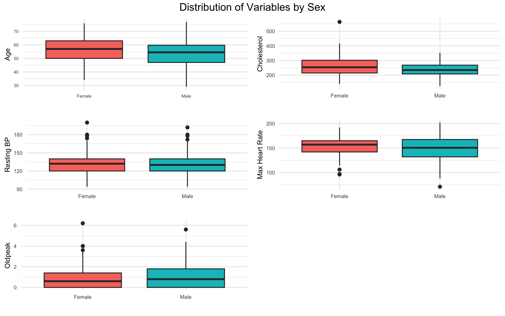
Clustering of Patients with Heart Disease
Capstone Project, M.S. in Data Analysis and Visualization
Introduction
Cardiovascular Heart Disease (CVD) remains a pervasive global health challenge, contributing significantly to morbidity and mortality rates worldwide [@cardiova]. Given its status as a leading cause of death, continuous advancements in research and treatment approaches are essential to address its diverse characteristics effectively. As our comprehension of the variations among individuals with heart disease expands, individualized and precisely targeted treatments have surfaced as a compelling area of exploration in cardiovascular medicine [@leopold2018].
In this project, we are analyzing heart disease data obtained from UCI Machine Learning Repository to find patterns and groups in patient information. We’re using several methods to do this:
K-Nearest Neighbors (KNN): First, we use KNN, a method that helps us classify patients based on their data. It looks at similar cases in the data and uses them to classify each patient.
K-Means Clustering: Next, we use k-means clustering. This method groups patients into clusters where patients in each cluster are similar to each other. It helps us see if there are common patterns among groups of patients.
Visualization of Clusters by PCA: To visualize the clusters formed by K-means, we employ Principal Component Analysis (PCA). By reducing the dimensionality of the dataset to its first two principal components (PC1 and PC2), we create a two-dimensional representation that captures the majority of the variance within the data. This visualization aids in interpreting the clustering results, offering a clear view of the patient groups in a reduced-dimensional space.
Hierarchical Clustering: Finally, we use hierarchical clustering. This method also groups patients but in a way that shows us a hierarchy, from very broad groups down to more specific ones.
The analysis sought to provide insightful categorizations of patients based on their heart disease data, potentially paving the way for personalized medicine and targeted healthcare interventions. The project underscored the efficacy of machine learning in healthcare analytics and emphasized the significance of systematic data exploration in deriving meaningful conclusions from complex medical datasets.
Methodology
In this study, a systematic approach to analyze cardiovascular disease (CVD) data was applied, leveraging a blend of machine learning techniques to unravel the complexities associated with heart disease diagnosis and patient management. The methodology was structured to not only identify inherent patterns within the dataset but also to enhance the precision and applicability of the findings in clinical settings.
Initially, the K-Nearest Neighbors (KNN) classification algorithm was utilized, a method renowned for its efficacy in pattern recognition within medical datasets. This was followed by an in-depth analysis using K-means clustering, conducted in two distinct rounds to assess the stability and reliability of the identified clusters. The first round of K-means clustering provided a baseline for patient groupings, while the second round, involving an adjustment in the “nstart” parameter, served to test the consistency of these groupings.
Further enriching the analysis, Principal Component Analysis (PCA) was implemented to visualize the clusters in a reduced-dimensional space, thereby offering a clearer understanding of the data’s structure. Lastly, hierarchical clustering, executed via both Ward and Complete linkage methods, was applied to explore and validate the data’s inherent groupings at different levels of granularity.
The comprehensive nature of this methodology, encompassing both classification and clustering techniques, was designed to yield insights that are robust, nuanced, and directly applicable to the improvement of cardiovascular health outcomes.
Data Collection and Management
The dataset utilized for this project is sourced from the UCI Machine Learning Repository, specifically from the Heart Disease dataset available at UC Irvine Machine Learning Repository [@andrasjanosi].
Data Overview
The dataset comprises a total of 76 attributes capturing various aspects related to heart health. However, it’s crucial to note that the majority of published experiments have focused on a subset of 14 attributes. Notably, the Cleveland database within this collection has been the primary focus of machine learning researchers. The primary target variable, denoted as the “goal” field, represents the presence of heart disease in patients and is integer-valued, ranging from 0 (no presence) to 4. For this analysis, the target variable named as HeartDisease and converted to binary values as 0 and 1.
| Age | Sex | ChestPainType | RestingBP | Cholesterol | FastingBSugar | RestingECG | MaxHR | ExerciseAngina | Oldpeak | ST_Slope | MajorVessels | Thalassemia | HeartDisease |
|---|---|---|---|---|---|---|---|---|---|---|---|---|---|
| 63 | 1 | 1 | 145 | 233 | 1 | 2 | 150 | 0 | 2.3 | 3 | 0 | 6 | 0 |
| 67 | 1 | 4 | 160 | 286 | 0 | 2 | 108 | 1 | 1.5 | 2 | 3 | 3 | 1 |
| 67 | 1 | 4 | 120 | 229 | 0 | 2 | 129 | 1 | 2.6 | 2 | 2 | 7 | 1 |
| 37 | 1 | 3 | 130 | 250 | 0 | 0 | 187 | 0 | 3.5 | 3 | 0 | 3 | 0 |
| 41 | 0 | 2 | 130 | 204 | 0 | 2 | 172 | 0 | 1.4 | 1 | 0 | 3 | 0 |
| 56 | 1 | 2 | 120 | 236 | 0 | 0 | 178 | 0 | 0.8 | 1 | 0 | 3 | 0 |
| 62 | 0 | 4 | 140 | 268 | 0 | 2 | 160 | 0 | 3.6 | 3 | 2 | 3 | 1 |
| 57 | 0 | 4 | 120 | 354 | 0 | 0 | 163 | 1 | 0.6 | 1 | 0 | 3 | 0 |
| 63 | 1 | 4 | 130 | 254 | 0 | 2 | 147 | 0 | 1.4 | 2 | 1 | 7 | 1 |
| 53 | 1 | 4 | 140 | 203 | 1 | 2 | 155 | 1 | 3.1 | 3 | 0 | 7 | 1 |
Understanding the data
The UCI Heart Disease dataset is a comprehensive collection of clinical, demographic, and physiological data for the heart disease patients. The detailed explanation of each variable:
Age: The patient’s age in years. Age is a crucial factor in heart disease risk, with risk generally increasing with age.
Sex: The patient’s biological sex.
- 0 = Female
- 1 = Male
Biological sex can influence heart disease risk and symptoms.
Chest Pain: The type of chest pain experienced.
1 = Typical Angina - Chest pain related to the heart not getting enough oxygen, usually triggered by physical activity or stress.
2 = Atypical Angina - A less common form of chest pain related to heart function.
3 = Non-Angina Pain - Chest pain not directly related to the heart.
4 = Asymptomatic - No chest pain despite heart disease presence.
RestingBP: (Resting Blood Pressure): The blood pressure (measured in mm Hg) when the patient is at rest. Blood pressure is the force of blood pushing against blood vessel walls. High resting blood pressure (hypertension) is a risk factor for heart disease.(in mm Hg on admission to the hospital) [@understa].
Cholesterol: (Serum Cholesterol): The amount of cholesterol in the blood (mg/dl). High levels of cholesterol can lead to the buildup of plaques in arteries, increasing heart disease risk.
FastingBSugar: (Fasting Blood Sugar ): Indicates if the fasting blood sugar level is higher than 120 mg/dl.
0 = False (Normal)
1 = True (High)
High fasting blood sugar can be a sign of diabetes, a risk factor for heart disease.
RestingECG: (Resting Electrocardiographic Results): Results from an ECG test, which measures the heart’s electrical activity.
0 = Normal
1 = ST-T Wave Abnormality - May indicate heart strain or poor blood supply.
2 = Left Ventricular Hypertrophy - Enlargement and thickening of the heart’s main pumping chamber.
A resting ECG (Electrocardiogram) is a diagnostic tool used to measure the electrical activity of the heart while at rest. It helps in detecting heart conditions by recording the timing and duration of each electrical phase in the heartbeat.
LVH, or Left Ventricular Hypertrophy, refers to the thickening of the walls of the heart’s left ventricle, often identified through an ECG. It can be indicative of increased stress on the heart or other underlying conditions [@ogah2008].
MaxHR: (Maximum Heart Rate Achieved): The highest heart rate achieved during exercise. Lower maximum heart rates can indicate poorer cardiovascular fitness and higher heart disease risk.
ExerciseAngina: (Exercise - Induced Angina): Whether chest pain is triggered by physical exertion.
- 0 = No
- 1 = Yes
Exercise-induced angina is a condition where physical exertion leads to chest pain or discomfort due to reduced blood flow to the heart muscle. It is a symptom of coronary artery disease, where the heart’s arteries are narrowed or blocked. Indications include chest pain during activity, which usually resolves with rest. Angina can also manifest as discomfort in the arms, neck, jaw, shoulder, or back [@angina:2014].
Oldpeak: (ST Depression Induced by Exercise Relative to Rest): The change in ST segment height on an ECG during exercise compared to rest. The ST segment is a part of the ECG readout, and changes can indicate poor blood flow to the heart [@burns2020].
ST_Slope: (The Slope of the Peak Exercise ST Segment): The slope of the ST segment during peak exercise.
- 1: Upsloping - May indicate healthier heart function.
- 2: Flat - May suggest heart disease.
- 3: Downsloping - Often considered a sign of significant heart disease.
MajorVessels: (Number of Major Vessels Colored by Fluoroscopy): The number of major blood vessels in the heart (out of a possible 0 to 3) identified with fluoroscopy. Fluoroscopy is an imaging technique that uses X-rays to view internal organs. More vessels with blockages can indicate higher heart disease risk. Fewer visible vessels can indicate heart disease.
Thalassemia: A blood disorder that affects hemoglobin, the oxygen-carrying component of blood.
- 3: Normal
- 6: Fixed Defect - A defect that does not change over time, often indicating a past heart issue.
- 7: Reversible Defect - A defect that varies over time, often indicating episodes of poor blood flow.
HeartDisease (Diagnosis of Heart Disease): The diagnosis of heart disease, based on angiographic disease status.
- 0: Less than 50% diameter narrowing in any major vessel - typically considered no heart disease.
- 1-4: More than 50% diameter narrowing - varying degrees of heart disease severity.
Understanding these variables helps in comprehensively analyzing the dataset to draw meaningful insights related to cardiovascular health.
Structure of the data set:
tibble [303 × 14] (S3: tbl_df/tbl/data.frame)
$ Age : num [1:303] 63 67 67 37 41 56 62 57 63 53 ...
$ Sex : num [1:303] 1 1 1 1 0 1 0 0 1 1 ...
$ ChestPainType : num [1:303] 1 4 4 3 2 2 4 4 4 4 ...
$ RestingBP : num [1:303] 145 160 120 130 130 120 140 120 130 140 ...
$ Cholesterol : num [1:303] 233 286 229 250 204 236 268 354 254 203 ...
$ FastingBSugar : num [1:303] 1 0 0 0 0 0 0 0 0 1 ...
$ RestingECG : num [1:303] 2 2 2 0 2 0 2 0 2 2 ...
$ MaxHR : num [1:303] 150 108 129 187 172 178 160 163 147 155 ...
$ ExerciseAngina: num [1:303] 0 1 1 0 0 0 0 1 0 1 ...
$ Oldpeak : num [1:303] 2.3 1.5 2.6 3.5 1.4 0.8 3.6 0.6 1.4 3.1 ...
$ ST_Slope : num [1:303] 3 2 2 3 1 1 3 1 2 3 ...
$ MajorVessels : num [1:303] 0 3 2 0 0 0 2 0 1 0 ...
$ Thalassemia : num [1:303] 6 3 7 3 3 3 3 3 7 7 ...
$ HeartDisease : num [1:303] 0 1 1 0 0 0 1 0 1 1 ...Pre-processing of the Data
Data pre-processing involves a series of operations aimed at cleaning, transforming, and organizing raw data into a format suitable for analysis. This process significantly impacts the quality and reliability of the insights derived from the data [@wickham2023].
Data Cleaning
This step involves handling missing data points, dealing with duplicates, and addressing outliers. Imputing missing values or removing inconsistent entries is essential to maintain data integrity.
In this dataset, two variables, Thalassemia and Major Vessels have missing values. For categorical variables like these two, a common approach is to impute missing values with the mode (the most frequently occurring value in the column) or to use a more sophisticated method such as predictive imputation [@imputem2019]. Since we don’t have much of missing values, we impute them using the mode. Besides, for the sake of simplicity, I converted the the HeartDisease variable to binary and factored as 0 = No Disease and 1 = Disease.
Summary of Dataset
Statistics of the data variables after imputing the missing values using the variable’s mode value.
Age Sex ChestPainType RestingBP
Min. :29.00 Min. :0.0000 Min. :1.000 Min. : 94.0
1st Qu.:48.00 1st Qu.:0.0000 1st Qu.:3.000 1st Qu.:120.0
Median :56.00 Median :1.0000 Median :3.000 Median :130.0
Mean :54.44 Mean :0.6799 Mean :3.158 Mean :131.7
3rd Qu.:61.00 3rd Qu.:1.0000 3rd Qu.:4.000 3rd Qu.:140.0
Max. :77.00 Max. :1.0000 Max. :4.000 Max. :200.0
Cholesterol FastingBSugar RestingECG MaxHR
Min. :126.0 Min. :0.0000 Min. :0.0000 Min. : 71.0
1st Qu.:211.0 1st Qu.:0.0000 1st Qu.:0.0000 1st Qu.:133.5
Median :241.0 Median :0.0000 Median :1.0000 Median :153.0
Mean :246.7 Mean :0.1485 Mean :0.9901 Mean :149.6
3rd Qu.:275.0 3rd Qu.:0.0000 3rd Qu.:2.0000 3rd Qu.:166.0
Max. :564.0 Max. :1.0000 Max. :2.0000 Max. :202.0
ExerciseAngina Oldpeak ST_Slope MajorVessels
Min. :0.0000 Min. :0.00 Min. :1.000 Min. :0.0000
1st Qu.:0.0000 1st Qu.:0.00 1st Qu.:1.000 1st Qu.:0.0000
Median :0.0000 Median :0.80 Median :2.000 Median :0.0000
Mean :0.3267 Mean :1.04 Mean :1.601 Mean :0.6634
3rd Qu.:1.0000 3rd Qu.:1.60 3rd Qu.:2.000 3rd Qu.:1.0000
Max. :1.0000 Max. :6.20 Max. :3.000 Max. :3.0000
Thalassemia HeartDisease
Min. :3.000 0:164
1st Qu.:3.000 1:139
Median :3.000
Mean :4.723
3rd Qu.:7.000
Max. :7.000 Exploratory Data Analysis
Exploratory Data Analysis (EDA) is a crucial initial step in the data analysis process. It involves the systematic examination and visualization of data to understand its structure, patterns, and potential insights [@wickham2023]. To understand the dataset, we visualize the variables and examine the distributions.
Distribution of Categorical Variables
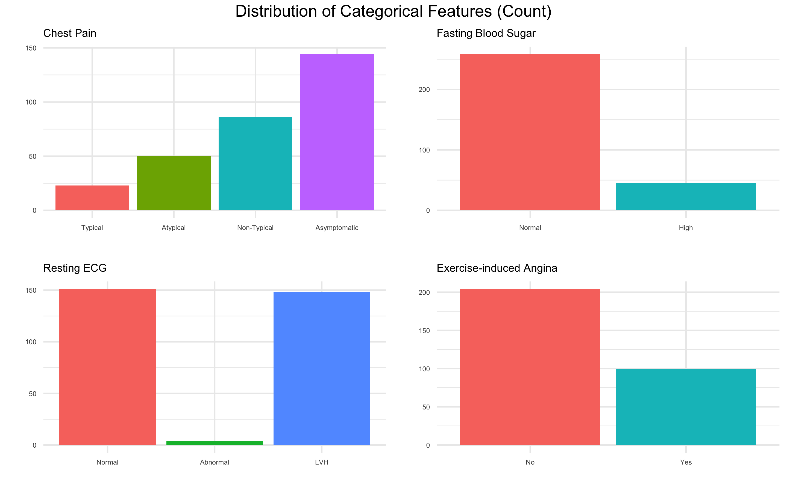
The plot revealed that the majority of patients experience asymptomatic chest pain, indicating no chest pain, while the fewest exhibit symptoms of typical chest pain.
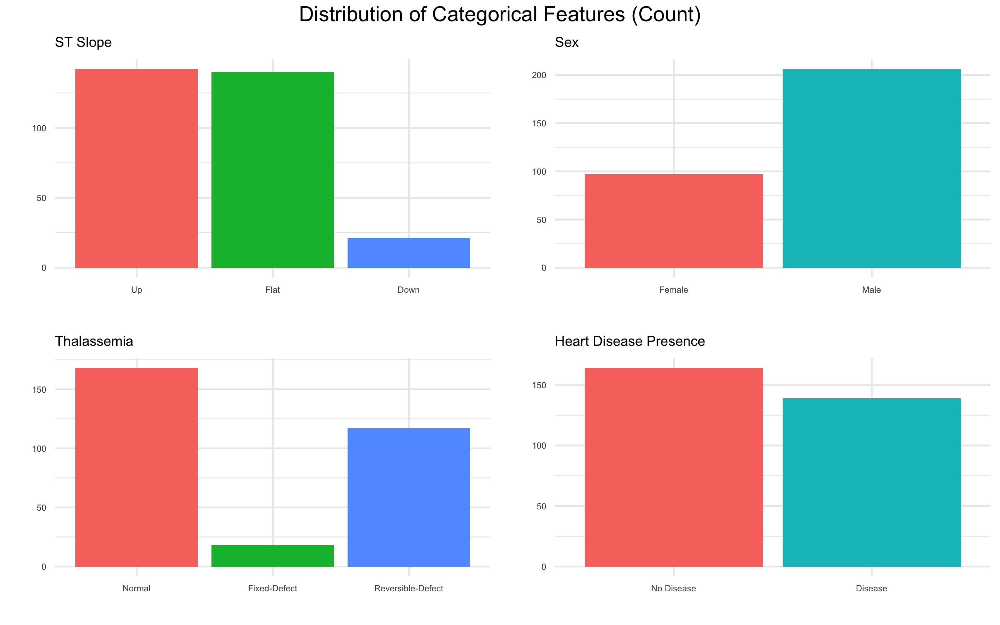
The plot highlighted that the largest proportion of heart disease patients are male. Additionally, it indicated that the counts of up-slope and flat-slope are quite similar, while the count of down-slope is relatively low.
Distribution of Numerical Variables
The distribution of numerical variables refers to how the values of these variables are spread or scattered across a range. In data analysis, understanding the distribution of numerical variables is crucial for various tasks, such as statistical testing, data modeling, and feature selection.
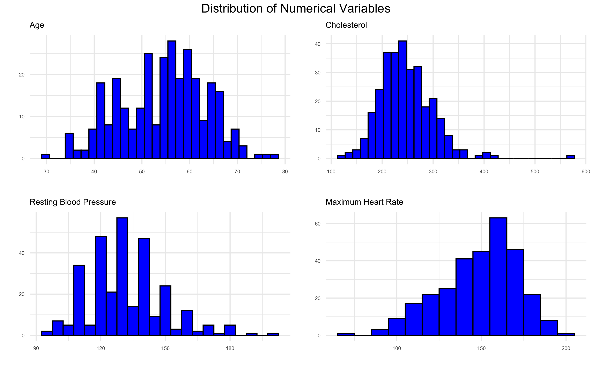
The plot demonstrated a noticeable increase in the number of patients after the age of 40. Cholesterol levels exhibit some outliers on the higher side. Furthermore, the distribution of resting blood pressure is skewed to the right, whereas the distribution of Maximum heart rate is skewed to the left.
Bivariate Analysis
Bivariate analysis involves the analysis of two variables simultaneously, to understand the relationship between them. It is a fundamental technique in statistics and data analysis for exploring correlations, associations, and patterns between two different variables [@rforda]. This analysis can reveal whether there’s a relationship between the two variables and how strong that relationship might be.
Numerical Variables vs. Sex
Displaying the distribution of variables segregated by gender can uncover hidden patterns and yield deeper insights, thereby aiding in more informed decision-making and conclusion formulation.
Categorical Variables Based on the Target Variable (Heart Disease)
It’s important to examine the distribution of categorical variables in relation to the response variable to gain a better understanding of the data and to provide insights for further analysis.
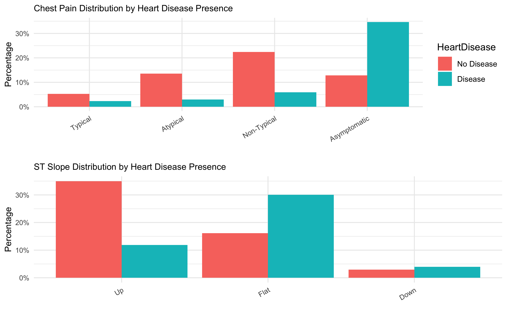
The plot highlighted a notably higher rate of heart disease in patients experiencing asymptomatic chest pain. Regarding the ST Slope in relation to the presence of Heart Disease, it’s evident that when the ST slope is flat, the likelihood of the disease is substantially higher (no disease: disease = 16%: 30%), whereas approximately 10% of patients with the up-slope exhibit the disease.
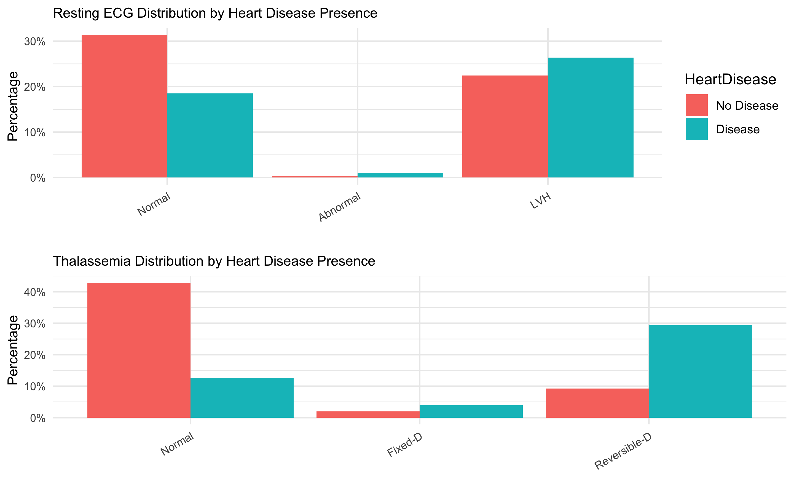
The plot suggested that if the resting ECG shows signs of LVH (Left Ventricular Hypertrophy, which involves the enlargement and thickening of the heart’s main pumping chamber), the likelihood of the disease is slightly elevated. Conversely, when the heart rhythm is normal, the probability of the disease is lower (approximately 31% without the disease and 18% with the disease).
Thalassemia is a hereditary blood disorder passed from parents to children, characterized by insufficient production of hemoglobin (red blood cells) [@cdc2020]. When we examine the plot of Thalassemia against Heart disease, it becomes evident that individuals with normal thalassemia levels have a reduced likelihood of the disease. Conversely, for patients with the thalassemia type of reversible defect, a higher proportion have the disease (approximately 10% without the disease and 30% with the disease).
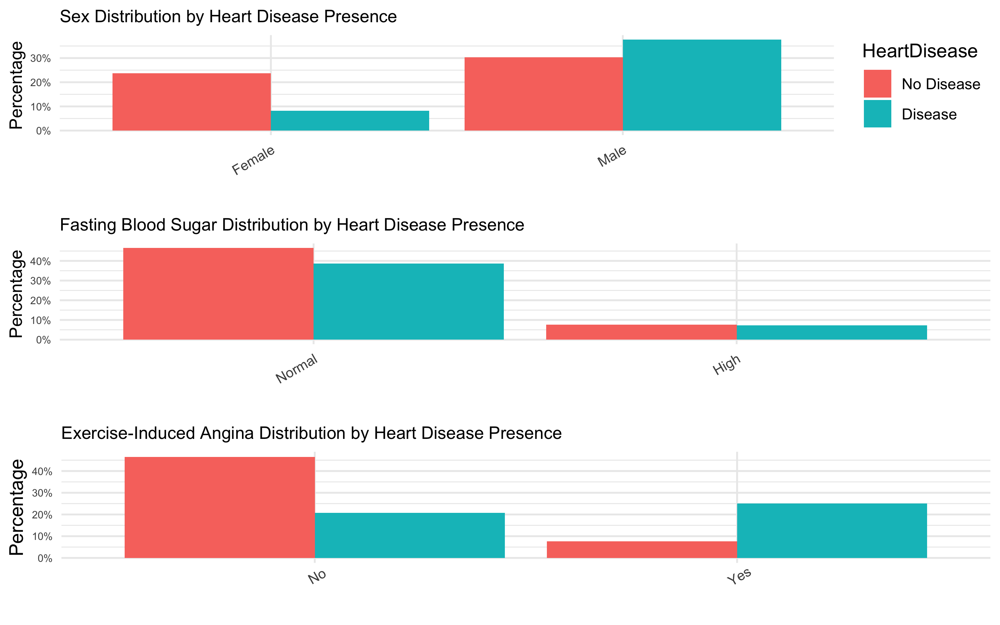
The plot depicting Sex versus Heart Disease revealed that the likelihood of the disease is greater in males (approximately 30% without the disease and 37% with the disease), whereas in females, it is considerably lower (approximately 24% without the disease and 8% with the disease).
Regarding fasting blood sugar, a level below 120 mg/dl is considered normal. The graph illustrated that when fasting blood sugar levels are elevated, the proportion of individuals with and without the disease is roughly equal.
Numerical Variables Pairwise Distribution
The Pearson correlation coefficient is a measure of the linear correlation between two variables X and Y. It has a value between +1 and -1, where 1 is total positive linear correlation, 0 is no linear correlation, and -1 is total negative linear correlation. The formula to calculate the Pearson correlation coefficient, denoted as \(r\), is:
\[ r = \frac{n(\sum xy) - (\sum x)(\sum y)}{\sqrt{[n\sum x^2 - (\sum x)^2][n\sum y^2 - (\sum y)^2]}} \]
Where:
\(n\) is the number of pairs of scores.
- \(\sum{xy}\) is the sum of the product of paired scores.
- \(\sum{x}\) and \(\sum{y}\) are the sums of the x scores and y scores respectively.
- \(\sum{x^2}\) and \(\sum{y^2}\) are the sums of the squared x scores and squared y scores respectively.
This formula essentially measures how much two variables change together, compared to how much they vary individually. It’s important to note that Pearson’s correlation only assesses linear relationships and is sensitive to outliers. If the relationship is not linear or the data contains outliers, Pearson’s correlation might not be the appropriate measure of association.
A Pearson Correlation heat-map is a graphical representation of the Pearson correlation coefficients between pairs of variables in a given dataset. In the heat-map, each cell represents the correlation coefficient between two variables. The variables are usually displayed on both the x and y axes, forming a matrix. The color of each cell indicates the strength and direction of the correlation: typically, a color gradient is used where one extreme (e.g., dark red) represents a high positive correlation (+1), the opposite extreme (e.g., dark blue) represents a high negative correlation (-1), and a neutral color (e.g., white or light grey) indicates no correlation (0) [@wickham2023].
It is an effective tool for quickly visualizing and identifying relationships between multiple variables, often used in exploratory data analysis to detect potential areas of interest for further analysis or to check assumptions in data modeling and machine learning.
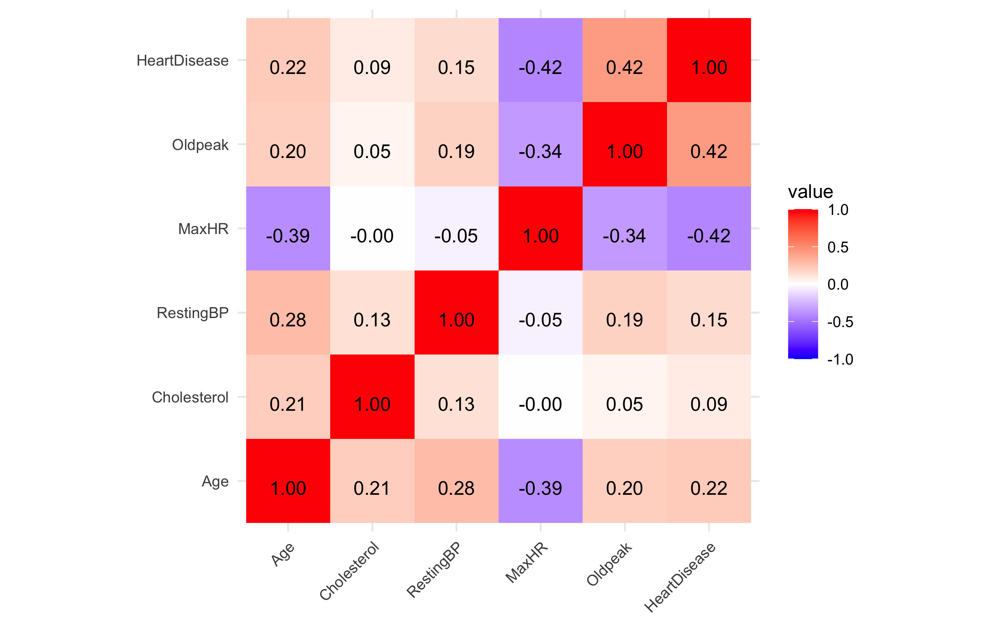
Classification: K-Nearest Neighbors (KNN) Machine Learning Algorithm
The k-Nearest Neighbors (k-NN) algorithm is a straightforward and widely used classification method. It operates on a simple principle: objects with similar features are likely to belong to the same class. This is based on the assumption that similar things exist in close proximity [@classifi].
Classification Process:
- When a new instance needs to be classified, the algorithm looks for the k closest labeled data points – the k-nearest neighbors.
- The algorithm calculates the distance (such as Euclidean distance) between the new instance and every other instance in the training set.
- It then selects the k closest instances, where k is a user-defined constant.
- The classification of the new instance is determined by a majority vote of its neighbors, with the new instance being assigned to the class most common among its k nearest neighbors.
The choice of k is crucial. A small value of k means that noise will have a higher influence on the result, while a large value makes the computation costly and may result in considering points that are too far away. The optimal k value is usually determined empirically via cross-validation [@datasci].
Features of k-NN:
- k-NN is a non-parametric and lazy learning algorithm.
- It is simple to understand and easy to implement.
- k-NN can be used for both classification and regression tasks.
Applications:
- It is widely used in real-life scenarios such as finance (for credit scoring), healthcare (for medical diagnosis), education, recommendation systems, and more. The algorithm gets significantly slower as the number of examples and/or predictors/independent variables increase [@classifi].
Prior to the application of the K-NN classification algorithm, the dataset underwent a thorough inspection for missing values.
Subsequently, the data was normalized using the “scale()” function, a standard preprocessing step facilitated by the ‘caret’ package in R. This scaling process is crucial to ensure that the variables contribute equally to the analysis, avoiding any bias due to the scale of measurements
| Age | Sex | ChestPainType | RestingBP | Cholesterol | FastingBSugar | RestingECG | MaxHR | ExerciseAngina | Oldpeak | ST_Slope | MajorVessels | Thalassemia | HeartDisease |
|---|---|---|---|---|---|---|---|---|---|---|---|---|---|
| 0.9471596 | 0.6850692 | -2.2480557 | 0.75627397 | -0.26446281 | 2.3904835 | 1.0150052 | 0.01716893 | -0.69548 | 1.0855423 | 2.2708221 | -0.7099569 | 0.6589141 | No |
| 1.3897030 | 0.6850692 | 0.8765355 | 1.60855891 | 0.75915934 | -0.4169448 | 1.0150052 | -1.81889638 | 1.43311 | 0.3965257 | 0.6480412 | 2.5007438 | -0.8887679 | Yes |
| 1.3897030 | 0.6850692 | 0.8765355 | -0.66420094 | -0.34171732 | -0.4169448 | 1.0150052 | -0.90086373 | 1.43311 | 1.3439235 | 0.6480412 | 1.4305102 | 1.1748081 | Yes |
| -1.9293722 | 0.6850692 | -0.1649949 | -0.09601098 | 0.06386882 | -0.4169448 | -0.9951031 | 1.63465503 | -0.69548 | 2.1190672 | 2.2708221 | -0.7099569 | -0.8887679 | No |
| -1.4868288 | -1.4548891 | -1.2065253 | -0.09601098 | -0.82455796 | -0.4169448 | 1.0150052 | 0.97891742 | -0.69548 | 0.3103986 | -0.9747397 | -0.7099569 | -0.8887679 | No |
| 0.1727088 | 0.6850692 | -1.2065253 | -0.66420094 | -0.20652194 | -0.4169448 | -0.9951031 | 1.24121247 | -0.69548 | -0.2063639 | -0.9747397 | -0.7099569 | -0.8887679 | No |
The k-NN model: k=5
Actual
Predicted No Yes
No 43 8
Yes 6 33Evaluation of the Model
[1] "The accuracy of the model is: 84.44"Visualizing the Results
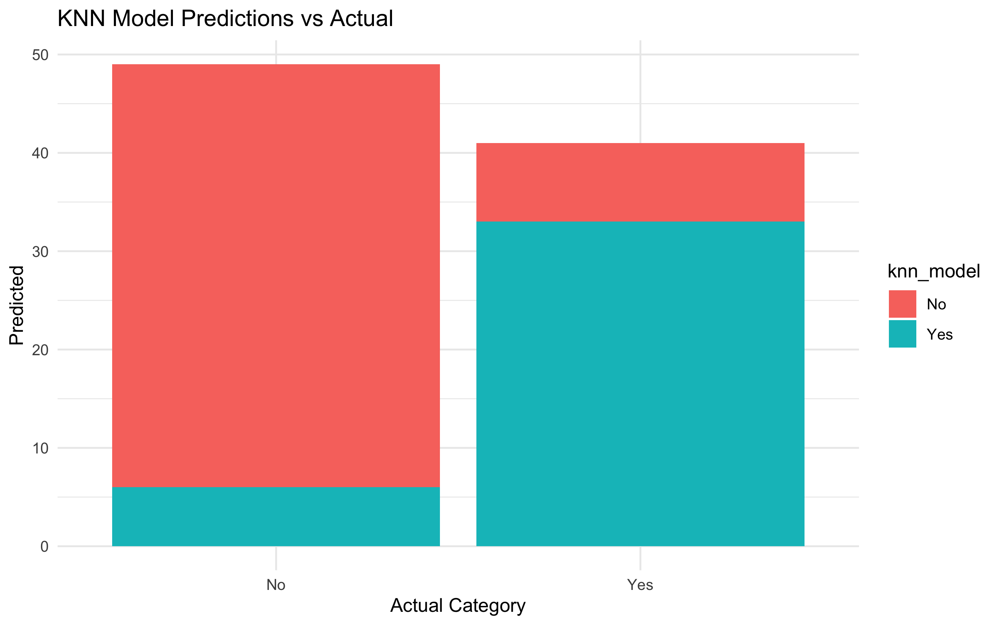
Model Tuning
Model tuning refers to the process of adjusting the parameters of a machine learning model to improve its performance or make it better suited to the data it is working with [@datascia].
In KNN, the choice of the k-value (the number of nearest neighbors to consider) is a critical parameter that can significantly influence the model’s performance. The key aspects of tuning the k-value in KNN are:
Balance Between Overfitting and Underfitting: A very small k-value can make the model sensitive to noise in the data, leading to overfitting. Conversely, a very large k-value can smooth out the predictions too much, leading to underfitting [@lee].
Validation Approach: Typically, the best k-value is found through validation techniques like cross-validation, where the model’s performance is tested on different subsets of the data for a range of k-values.
- Cross-Validation: Use k-fold cross-validation to evaluate the performance of the KNN model for different values of k. This involves splitting the training dataset into k smaller sets (or folds), then training the model k times, each time using a different fold as the validation set and the remaining data as the training set [@leea].
k-Nearest Neighbors
213 samples
13 predictor
2 classes: 'No', 'Yes'
No pre-processing
Resampling: Cross-Validated (10 fold)
Summary of sample sizes: 191, 191, 192, 193, 191, 192, ...
Resampling results across tuning parameters:
k Accuracy Kappa
1 0.7649567 0.5234296
2 0.7890043 0.5729102
3 0.8114935 0.6174143
4 0.8258009 0.6452885
5 0.8169264 0.6253310
6 0.8114719 0.6160883
7 0.8219264 0.6365059
8 0.8269481 0.6490313
9 0.8310173 0.6530735
10 0.8357792 0.6627062
11 0.8403247 0.6725589
12 0.8409957 0.6752081
13 0.8643939 0.7220932
14 0.8596320 0.7111636
15 0.8548701 0.7017160
16 0.8637229 0.7192471
17 0.8585065 0.7084796
18 0.8539610 0.6988101
19 0.8589610 0.7100729
20 0.8446537 0.6798353
Accuracy was used to select the optimal model using the largest value.
The final value used for the model was k = 13.Interpretation of the Result:
Optimal k-Value: The model tuning process identified that k = 13 as the optimal number of neighbors for the KNN algorithm. This means that when making a prediction for a new data point, the algorithm considers the 13 nearest data points in the training set and bases its prediction on these.
Accuracy: The choice of k = 13 was based on achieving the highest accuracy. Accuracy is a measure of how often the model correctly predicts the target variable. A high accuracy with this k-value suggested that the model is generally effective in classifying the data correctly.
Kappa Statistic: A Kappa of 0.722 is relatively high, suggesting good agreement between the model predictions and the actual values. In the context of Kappa, where 1 is perfect agreement and 0 is no better than chance, a value of 0.722 indicates that the model’s predictions are substantially in agreement with the actual values, and much of this agreement is not due to chance.
K-Means Clustering
K-means clustering is a popular unsupervised machine learning algorithm used for partitioning a dataset into a set of distinct, non-overlapping subgroups or clusters. The K-means clustering algorithm in the heart disease dataset was employed to uncover hidden groupings or clusters among the data points.The algorithm aims to partition the data such that the variance within each cluster is minimized [@k-means].
Algorithm Steps:
- Initialization: Start by randomly selecting k centroids, where k is the desired number of clusters.
- Assignment Step: Assign each data point to the nearest centroid, creating clusters.
- Update Step: Recalculate the centroids as the mean of all data points in each cluster.
- Repeat: Repeat the assignment and update steps until the centroids no longer change significantly, indicating that the clusters are stable [@k-means].
Choosing k: The number of clusters, k, is a user-defined parameter and can be determined using various methods, such as the Elbow Method, Silhouette Analysis, or domain knowledge.
K-means clustering is commonly used for market segmentation, pattern recognition, image compression, and similar applications where data needs to be grouped. [@k-means]
Selecting the Optimal Number of Clusters (k)
Selecting the optimal number of clusters (k) in k-means clustering is a crucial step, and one common method to determine this is by using the “Elbow Method”, often visualized through a scree plot. The Elbow Method involves running k-means clustering on the dataset for a range of values of k (for example, k from 1 to 10), and then for each value of k calculating the sum of squared distances from each point to its assigned center. When these overall dispersions are plotted against the number of clusters, the “elbow” of the curve represents an optimal value for k [@datasci].
The within-cluster sum of squares (WSS), also known as the “within-cluster variance” or “inertia,” is a measure used to evaluate the quality of clustering in the k-means algorithm. It quantifies the compactness or tightness of clusters. The formula for WSS is as follows:
For a given cluster k, the WSS is calculated as the sum of the squared Euclidean distances between each data point (\(x_i\)) in the cluster and the centroid (\(c_i\)) of that cluster. This is done for all data points within the cluster:
\[WSS_k = \sum_{i = 1}^{n_k}(x_i -c_i)^2\] Where:
- \(WSS_k\) is the within-cluster sum of squares for cluster k.
- \(n_k\) is the number of data points in cluster k.
- \(x_i\) represents each data point in cluster k.
- \(c_i\) is the centroid (mean) of cluster k.
To obtain the total WSS for a k-means clustering with ‘k’ clusters, sum the WSS values for all clusters: The total WSS:
\[ Total WSS = \sum_{k = 1}^{K}WSS_k \]
Plot these Within-cluster Sum of Square values against the number of clusters k.The point where the plot starts to bend and forms an “elbow” is considered as an indicator of the appropriate number of clusters [@datascic].
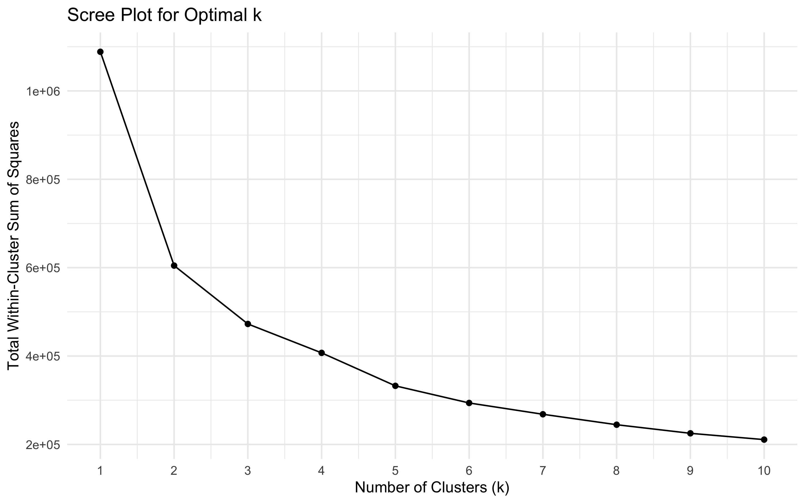
The scree plot indicated that two clusters would be optimal for the dataset in question. However, there was also substantial evidence to justify the exploration of three clusters, presenting an alternative perspective on the potential segmentation of the data.
To firmly establish the correct k-value, an alternative method called the Average Silhouette method was employed. This technique aids in identifying the optimal number of clusters (k) in unsupervised clustering, like K-Means. It assesses the degree of similarity between data points within their assigned clusters versus other clusters. A higher Average Silhouette score signifies more distinct and well-defined clusters, and the k-value corresponding to the highest average score is selected as the optimal number of clusters [@kassambara].
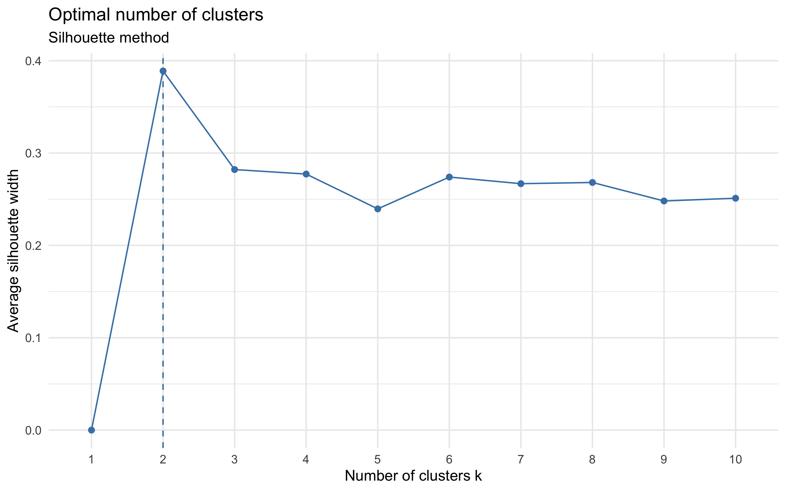
After conducting both the Elbow method and the Average Silhouette method, the optimal k-value was determined as 2.
K-means is a method used to group data, like patient information, into clusters. This method starts by randomly choosing points in the data to form the initial clusters, which means every time we run k-means, we might get different clusters [@k-meansc].
For the heart disease dataset, the significance of the clusters was evaluated to ensure they were not mere random groupings. Consistency in patient grouping was examined by running the k-means algorithm from different starting points. If identical patients consistently clustered differently, this could indicate that the clusters were not meaningfully related to patient characteristics. Consequently, the algorithm was executed twice to test the robustness of the clustering outcome.
K-means clustering was performed twice on the heart disease data by changing the nstart value in the second round which refers to the number of random initialization of centers. The K-means algorithm is sensitive to the initial placement of the centroids [@k-means]. To mitigate this, nstart specifies how many times the algorithm should be run with different random initialization. The best output in terms of within-cluster sum of squares is kept.
The K-Means Clustering Results
- Cluster Sizes in Each Round:
| Cluster 1 | Cluster 2 | |
|---|---|---|
| Round1 | 114 | 189 |
| Round2 | 111 | 192 |
Consistency of Clusters:
To determine if the same patients are grouped together in both rounds, the cluster assignments of individual patients across the two rounds would be compared.
This can be done by checking how many patients in each cluster from Round 1 are also in the same or different clusters in Round 2.
Checking Cluster Consistency :
| Round 1 | Round 2 | |
| Cluster 1 | Cluster 2 | |
| Cluster 1 | 51 | 67 |
| Cluster 2 | 60 | 125 |
Interpreting the Contingency Table:
• If many patients from a cluster in Round 1 are in the same cluster in Round 2, this suggests consistency.
•If patients from a cluster in Round 1 are spread across different clusters in Round 2, this suggests inconsistency.
In the contingency table obtained from two rounds of clustering, the diagonal cells represented the count of data points that remained in the same cluster for both rounds. For instance, the count at the intersection of Cluster 1 in Round 1 and Cluster 1 in Round 2 indicated the number of patients who stayed in Cluster 1 throughout.
High counts in the diagonal cells, relative to the off-diagonal cells, were indicative of high level of consistency, signifying that considerable number of patients consistently grouped into the same cluster in both clustering rounds.
In contrast, higher counts in the off-diagonal cells compared to the diagonal cells suggested that numerous patients moved to different clusters in the subsequent round, implying variability or instability in the clustering outcomes.
In the contingency table presented, the diagonal values (51, 125) indicated lower counts compared to the off-diagonal ones. While 125 instances remained in Cluster 2 during the second round, the high count of off-diagonal (displaced) values (60, 67) implied that K-means clustering might not have been effective or robust for this dataset, as evidenced by the lack of consistent clustering results.
Clustering Statistics
After performing k-means clustering, calculating statistics for each cluster is crucial for interpretation. This typically involves looking at the mean, median or standard deviation values of key variables within each cluster.
Statistics for Round 1 Clustering:
| cluster_round1 | Age | RestingBP | Cholesterol | RestingECG | MaxHR | Oldpeak | statistic |
|---|---|---|---|---|---|---|---|
| 1 | 58.23 | 134.96 | 254.67 | 1.22 | 132.95 | 1.87 | mean |
| 2 | 52.15 | 129.71 | 241.88 | 0.85 | 159.66 | 0.54 | mean |
| 1 | 7.26 | 18.68 | 57.43 | 0.97 | 20.56 | 1.23 | sd |
| 2 | 9.25 | 16.66 | 47.56 | 0.99 | 17.79 | 0.76 | sd |
It’s observed that in cluster 1, the averages for age, resting blood pressure, cholesterol levels, resting electrocardiographic readings, and oldpeak are higher, whereas the average maximum heart rate is lower.
Statistics for Round 2 Clustering:
| cluster_round2 | Age | RestingBP | Cholesterol | RestingECG | MaxHR | Oldpeak | statistic |
|---|---|---|---|---|---|---|---|
| 1 | 56.68 | 135.13 | 298.96 | 1.17 | 145.97 | 1.15 | mean |
| 2 | 53.14 | 129.70 | 216.47 | 0.89 | 151.71 | 0.98 | mean |
| 1 | 8.24 | 19.40 | 41.14 | 0.98 | 23.16 | 1.20 | sd |
| 2 | 9.24 | 16.19 | 27.53 | 0.99 | 22.50 | 1.14 | sd |
Within Cluster 1, the analysis revealed that mean values for age, resting blood pressure, cholesterol levels, resting electrocardiographic readings, and oldpeak were elevated. Conversely, the average maximum heart rate was observed to be lower in comparison both rounds of clustering.
Frequency Distribution of Categorical Variables for Each Cluster of round-2
This frequency distribution allows us to analyze how categorical variables are distributed across the different clusters, which can provide insights into the characteristics of each cluster. For instance, if a particular category of a variable like ChestPainType is over-represented in one cluster compared to others, it might suggest a specific health profile or risk factor associated with that cluster.
# A tibble: 6 × 4
cluster_round2 category value frequency
<int> <chr> <fct> <int>
1 1 ChestPainType Typical 7
2 1 ChestPainType Atypical 19
3 1 ChestPainType Non-Typical 25
4 1 ChestPainType Asymptomatic 60
5 1 ExerciseAngina No 67
6 1 ExerciseAngina Yes 44
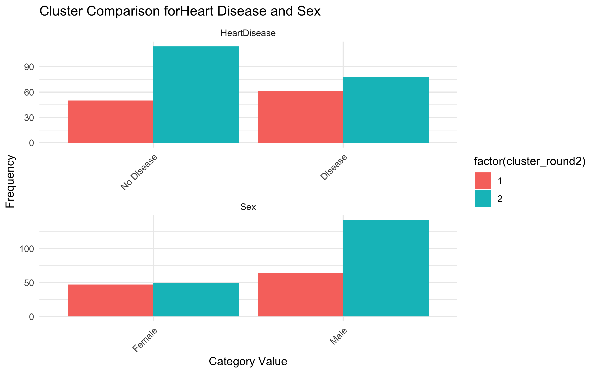
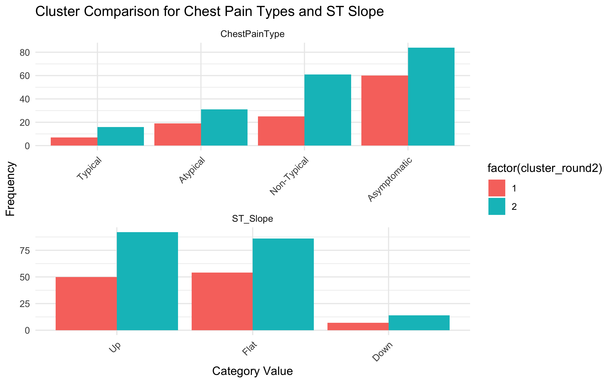
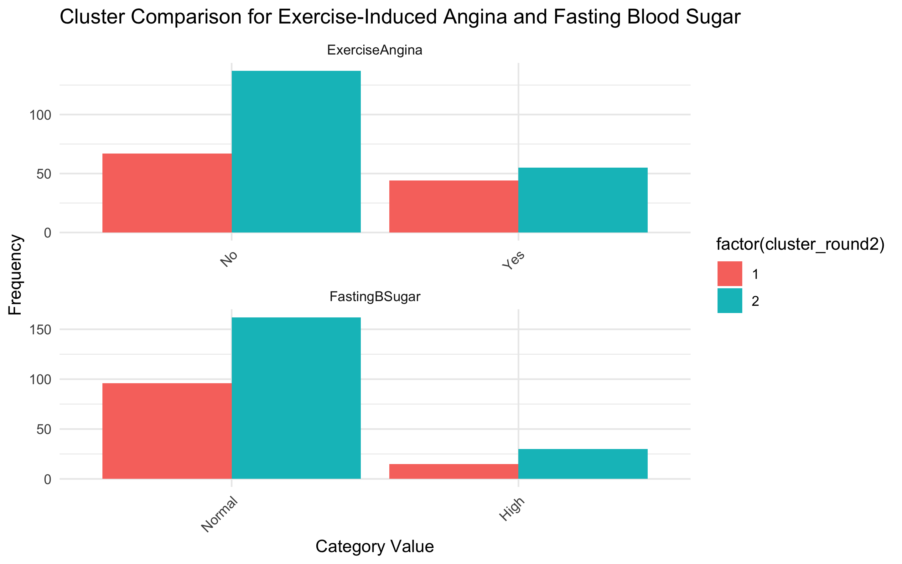
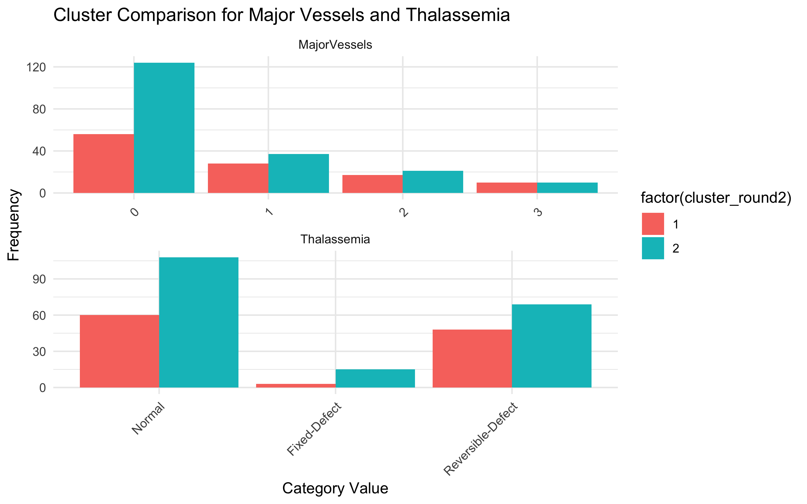
Visualization of K-Means Clusters
The clusters derived from the K-means algorithm were visualized using Principal Component Analysis (PCA) in order to uncover patterns and groupings that might not be apparent in the high-dimensional space.
PCA is a method used to reduce the number of variables in a dataset while retaining most of the original information. It does this by transforming the original variables into a new set of variables, the principal components, which are orthogonal (uncorrelated) and account for decreasing proportions of the total variance in the data [@principaa].
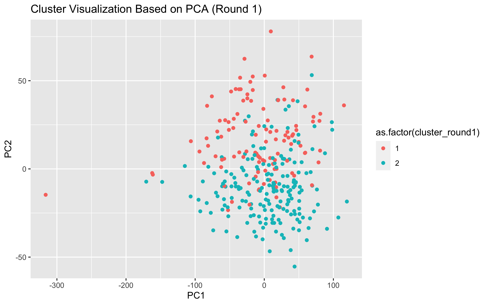
Visualization of PCA in the Context of K-Means Clustering
Principal Component Analysis (PCA) is a powerful technique used in data analysis for dimensionality reduction. It transforms high-dimensional data into a lower-dimensional form, making it easier to visualize and interpret, especially when dealing with complex datasets like those in healthcare [@principa].
In the context of k-means clustering, particularly with datasets involving multiple variables related to heart disease, PCA serves as an invaluable tool for several reasons:
Simplifying Data Visualization: PCA reduces the dimensions of the data to the two most informative components (PC1 and PC2). This simplification allows us to create a two-dimensional scatter plot, where each point represents a patient, and the clustering results can be visually assessed [@principa].
Understanding Data Structure: The visualization in the reduced PCA space allowed for the observation of patient groupings as determined by the k-means algorithm. Clusters that appeared distinct and well-separated in the PCA plot indicated the successful identification of meaningful patterns in the data.
Interpreting Clusters: The PCA plot can help in interpreting the characteristics of the clusters. For instance, if patients with certain risk factors (like high cholesterol or age) are predominantly found in one cluster, it could indicate a group with a higher risk of heart disease.
Facilitating Decision Making: The clarity provided by PCA visualization aids in making informed decisions, such as adjusting the number of clusters in k-means or identifying key variables for further analysis.
In summary, PCA visualization in the context of k-means clustering provides a clear, simplified view of how patients are grouped based on their health data. This approach not only aids in validating the clustering results but also offers insights into the underlying structure of the data, which is crucial for accurate interpretation and subsequent healthcare decisions.
To comprehend the principal components more thoroughly, PCA Loadings were analyzed. PCA loadings indicate the contribution of each original variable to the principal components, shedding light on the variables that most significantly differentiate the clusters[@principa].
PC1 PC2
Age -3.840605e-02 0.1805473584
Sex 1.809087e-03 0.0008614885
ChestPainType -1.346164e-03 0.0134038544
RestingBP -5.046882e-02 0.1052647923
Cholesterol -9.979678e-01 -0.0160574683
FastingBSugar -9.354910e-05 0.0004547923
RestingECG -3.339509e-03 0.0041332466
MaxHR 3.763080e-03 -0.9770783917
ExerciseAngina -5.747917e-04 0.0075579879
Oldpeak -1.155392e-03 0.0179443866
ST_Slope 3.234030e-06 0.0104115930
MajorVessels -2.303433e-03 0.0114799888
Thalassemia -8.202218e-04 0.0237684135Visualizing PCA Loadings
A bar plot to display the contribution of each original variable to PC1 and PC2:
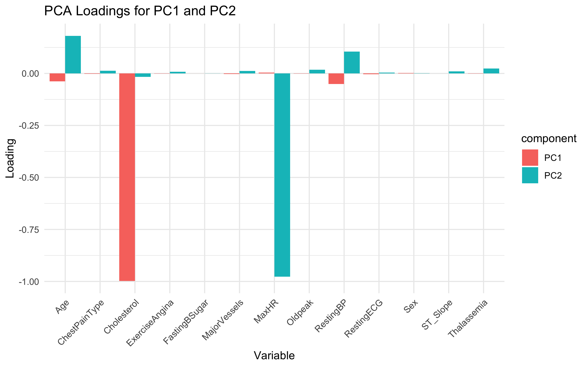
The PCA loadings revealed that PC1 was predominantly influenced by cholesterol levels, suggesting that this component may be reflective of patient health in relation to metabolic factors. In contrast, PC2 influenced significantly by maximum heart rate (MaxHR) and age, albeit in opposite directions, potentially representing a combination of cardiovascular efficiency (reflected by heart rate) and age-related factors.
Through the PCA loadings and subsequent cluster visualization, insights into the underlying characteristics of patient groups were obtained. PC1 was primarily indicative of cholesterol-related variations, while PC2 captures a blend of heart rate and age factors. This dimensional reduction, coupled with k-means clustering, provided a detailed understanding of patient health profiles, which could assist in devising targeted healthcare strategies. However, these findings should be considered exploratory and validated further with clinical expertise to ensure their relevance and accuracy in medical research or practice.
In summary, the analysis of the heart disease dataset using k-means clustering with two clusters, demonstrated moderate consistency in patient groupings across two rounds of clustering. While a significant portion of patients were grouped into the same cluster in both rounds, indicating potentially meaningful groupings, there was also notable movement between clusters. This suggests that while there may be some stable patterns in the data, there is also a degree of variability in how patients are grouped. These findings highlight the importance of considering multiple rounds of clustering and possibly exploring additional clustering methods or incorporating more domain-specific knowledge for a comprehensive understanding of patient categorizations.
Hierarchical Clustering
Hierarchical clustering is a method of cluster analysis that seeks to build a hierarchy of clusters. It is a widely used and effective approach in data analysis for grouping data points into a tree-like structure based on their similarity [@hierarch]. Hierarchical clustering involves creating a hierarchy of clusters, which is typically visualized in a dendrogram.
There are two main types:
- Agglomerative (Bottom-Up): Each observation starts in its own cluster, and pairs of clusters are merged as one moves up the hierarchy.
- Divisive (Top-Down): All observations start in one cluster, and splits are performed recursively as one moves down the hierarchy.
In the agglomerative approach, each data point starts as a single cluster and then pairs of clusters are successively merged based on their distance or similarity.
Common linkage criteria for merging clusters include methods like Ward’s method, maximum or complete linkage, average linkage, and single linkage.
The results of hierarchical clustering are often represented in a dendrogram, a tree-like diagram that records the sequences of merges or splits. The height (y-axis) of the dendrogram is the distance for the split or merge.
Hierarchical clustering is used in various fields such as biology (for gene and protein sequencing), marketing (customer segmentation), and document clustering in information retrieval.
Advantages:
No need to specify the number of clusters in advance.
The dendrogram provides a visual summary of the clustering process, which can be an informative tool for understanding the data.
Limitations:
Sensitive to noise and outliers.
Hierarchical clustering can be more computationally expensive than other clustering methods, like k-means.
Hierarchical clustering’s ability to provide intuitive dendrograms and its flexibility (no need to pre-specify the number of clusters) make it a popular choice for exploratory data analysis.
In hierarchical clustering, different linkage methods are used to determine the distance (similarities, dissimilarities) between the sets of observations. The choice of linkage method can significantly affect the outcomes of the clustering process. Here’s a brief description of three common linkage methods: Ward’s method, Complete linkage, and Average linkage [@msc2023].
Ward’s Method (ward.D2): Ward’s method, particularly the ward.D2 variant, is an agglomerative clustering approach. It minimizes the total within-cluster variance. At each step, the pair of clusters with the minimum between-cluster distance are merged. Application: This method is particularly useful when the clusters are of approximately similar sizes and when you want to minimize the variance within clusters. Characteristics: Tends to create more compact, equally sized clusters, which can be advantageous for certain types of data but may force some natural groupings to merge [@msc2023] .
Complete Linkage: Complete linkage clustering, also known as the maximum or farthest neighbor method, defines the distance between two clusters as the maximum distance between any single data point in the first cluster and any single data point in the second cluster. Application: It’s well-suited for separating clusters that are relatively compact and far from each other. Characteristics: This method can often reveal the actual structure of the data but might also be sensitive to outliers, resulting in clusters that are influenced by the most dissimilar members [@hierarcha] .
Average Linkage: In average linkage clustering, the distance between two clusters is defined as the average distance between each data point in the first cluster and every data point in the second cluster. Application: It is useful for creating clusters where each member is similar on average to the members of its cluster. Characteristics: This method provides a balance between the sensitivity of the complete method to outliers and the tendency of the Ward’s method to create clusters of similar sizes. However, it can sometimes create chaining effects where clusters end up being elongated and straggly [@msc2023].
In this analysis, the hierarchical clustering was performed using the two most common linkage methods (the ward and the complete linkage), subsequently compared to each other.
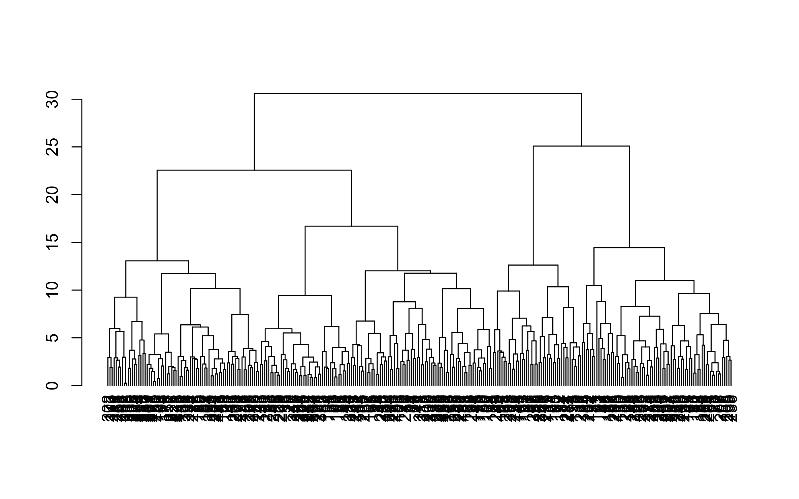
Based on the dendrogram, the optimal cut height for dividing the dendrogram into two clusters falls within the range of 25-30. This outcome aligned with the result obtained using the Silhouette method for K-means clustering, reaffirming the choice of two clusters as the most suitable number.
After partitioning the dendrogram with K= 2, the table that provides the count of observations within each cluster was generated.
| Cluster 1 | Cluster 2 |
|---|---|
| 116 | 187 |
The cluster assignment for each variable.
[1] 1 1 1 2 2 2 1 2 2 1 2 2 1 2 1 2 2 2 2 2 1 1 2 2 1 2 2 1 2 1 2 1 2 2 2 2 1
[38] 1 1 1 1 2 2 1 2 2 2 2 1 1 2 2 2 2 2 1 2 2 2 1 2 2 1 1 1 1 2 2 1 2 2 1 1 2
[75] 2 2 1 2 2 1 1 2 2 1 2 2 2 2 2 2 2 1 2 2 2 2 1 1 2 2 2 2 2 1 2 2 2 2 1 1 2
[112] 1 2 1 1 2 1 2 1 2 1 1 1 1 1 2 1 1 2 2 2 2 2 2 2 2 1 1 1 1 2 2 1 1 1 2 1 2
[149] 2 2 1 2 1 1 1 1 2 2 2 2 2 2 2 2 1 2 2 1 2 2 1 1 2 2 2 1 1 1 2 1 2 1 2 1 2
[186] 2 1 1 2 2 2 1 1 2 2 1 1 2 2 2 2 2 1 1 2 1 1 1 2 2 2 2 2 1 2 2 2 2 2 2 2 2
[223] 2 1 2 2 2 2 1 1 2 1 2 1 2 1 1 2 2 2 2 2 2 2 1 1 2 1 2 1 1 1 1 2 2 2 2 2 2
[260] 2 2 1 2 2 1 1 1 1 2 2 1 2 1 2 2 2 2 2 2 2 1 2 2 2 2 1 1 2 2 2 2 2 1 1 2 2
[297] 1 2 2 1 1 2 2The dendogram with two colored clusters
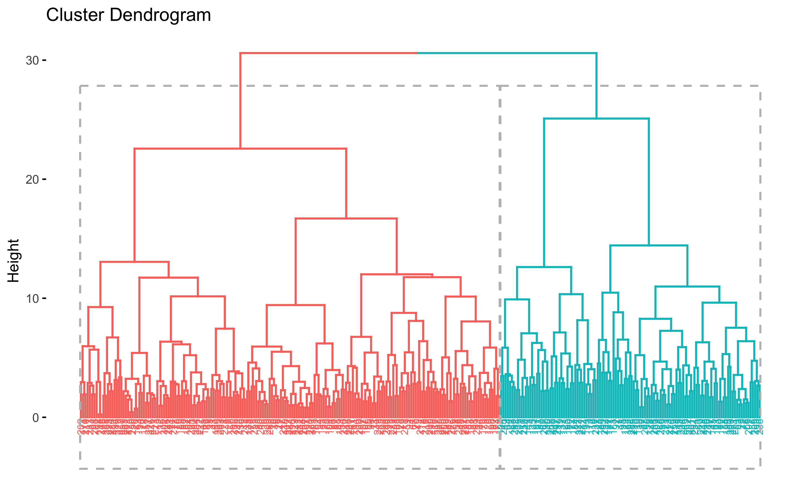
The Clusters obtained hierarchically by the ward.D2 method:
Hierarchical Clustering by the Average Linkage Method
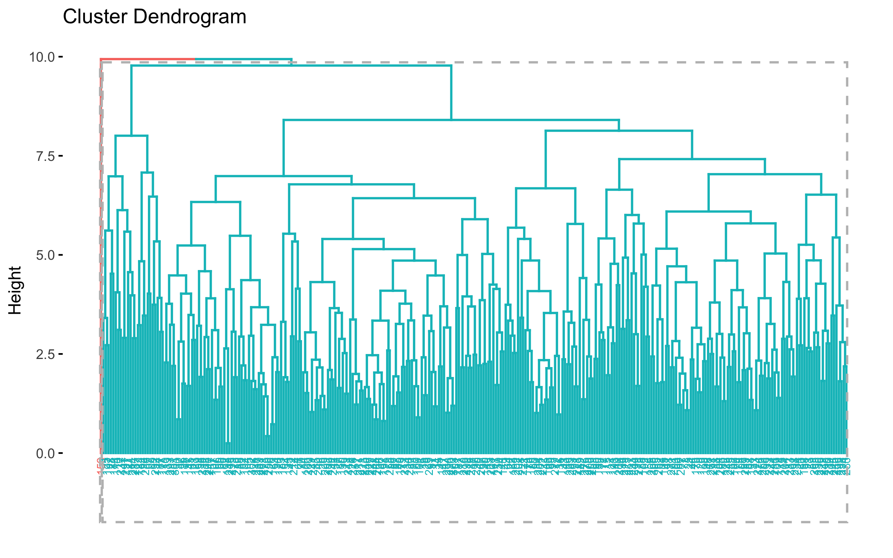
Subsequent to the hierarchical clustering process, cluster labels were reassigned to the original dataset to facilitate analysis of cluster composition. The dataset was summarized by cluster to gain insights into the mean or standard deviation values of each variable within each cluster.
| hcluster_ward | Age | RestingBP | Cholesterol | RestingECG | MaxHR | Oldpeak | statistic |
|---|---|---|---|---|---|---|---|
| 1 | 57.46 | 134.75 | 253.15 | 1.21 | 134.65 | 1.68 | mean |
| 2 | 52.57 | 129.79 | 242.69 | 0.86 | 158.89 | 0.64 | mean |
| 1 | 7.59 | 19.21 | 60.81 | 0.97 | 22.84 | 1.31 | sd |
| 2 | 9.37 | 16.29 | 44.99 | 0.99 | 17.35 | 0.85 | sd |
In the application of Hierarchical clustering using the Ward method, it was noted that the first cluster demonstrated higher mean values across all metrics, with the exception of maximum heart rate. This clustering pattern implies that patients in cluster one may have a higher likelihood of heart disease or being at an elevated risk, whereas those in cluster two tend to have lower cholesterol and resting blood pressure, among other factors, suggesting a potentially lower risk. However, it’s important to note that individual variability exists, warranting a more in-depth examination for accurate assessment.
Conclusion
Our comprehensive analysis of heart disease data, utilizing a blend of machine learning techniques, has provided valuable insights into the diagnosis and clustering of heart disease patients. The application of the K-Nearest Neighbors (KNN) classification algorithm yielded a commendable accuracy of 84.44%. Further refinement through a 10-fold cross-validation process identified the optimal number of neighbors (k = 13) to enhance the model’s performance, achieving an accuracy of 86.44% and a Kappa statistic of 0.7221. These results underscore the effectiveness of KNN in distinguishing between patients with and without heart disease.
In exploring patient clustering, we conducted two rounds of K-means clustering with the primary variation being the “nstart” parameter in the second round. The optimal number of clusters (k = 2) was determined through the elbow and silhouette methods. The consistency between the two rounds of clustering was notable, albeit with some variations in cluster sizes. The visualization of these clusters through Principal Component Analysis (PCA) offered a clear and interpretable two-dimensional representation of the patient groupings.
Our investigation further extended to hierarchical clustering using both Ward and Complete linkage methods. The Complete linkage method resulted in unbalanced clusters, suggesting a sensitivity to certain data characteristics. In contrast, the Ward method yielded more insightful clusters. Specifically, patients in cluster one displayed consistently higher mean values across most measured variables, with the exception of maximum heart rate. This distinction potentially indicates a subgroup of patients with more severe manifestations of heart disease.
Overall, our multi-faceted approach to analyzing heart disease data — encompassing KNN classification, K-means clustering, and hierarchical clustering — has not only affirmed the utility of these methods in medical data analysis but also highlighted the nuanced nature of heart disease presentation. The insights gleaned from this study could be instrumental in guiding targeted diagnostic and treatment strategies, ultimately contributing to improved healthcare outcomes for heart disease patients.